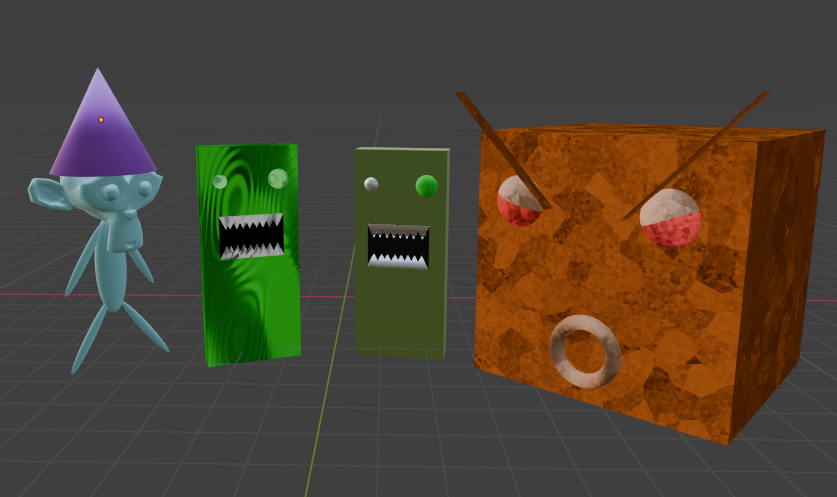
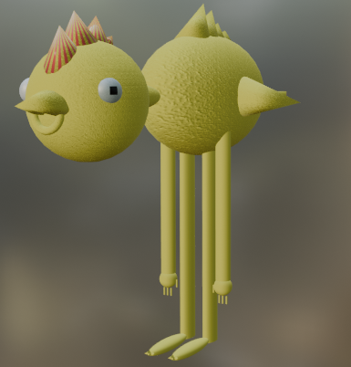
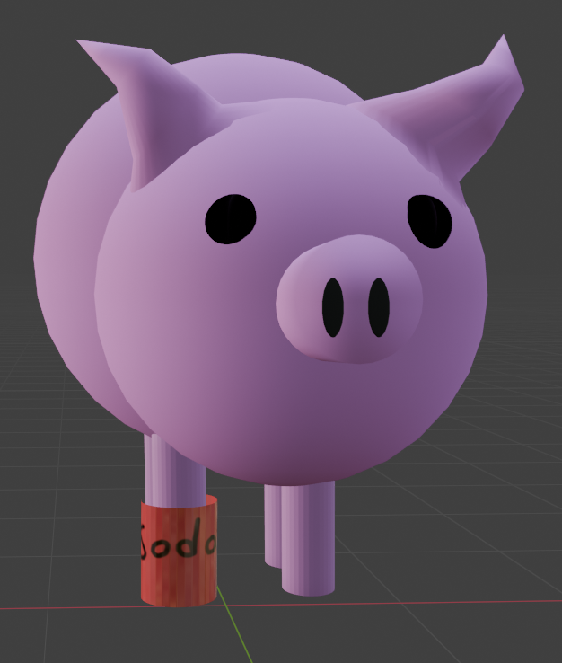
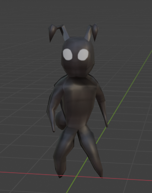
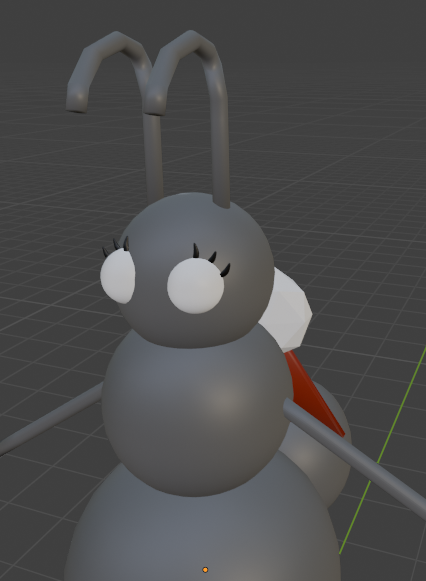
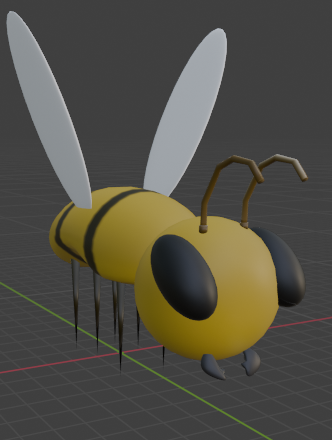
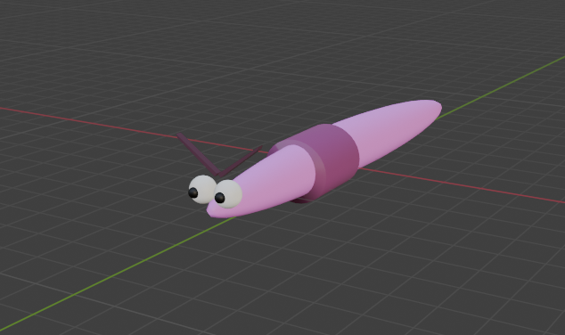
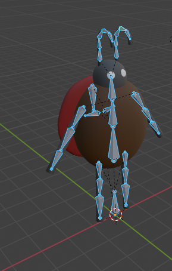
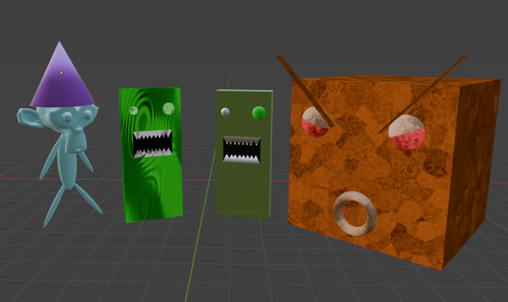
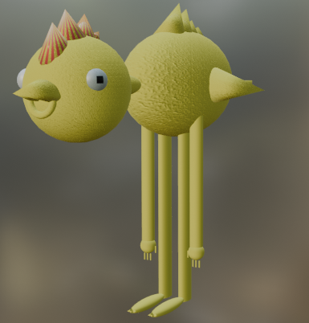
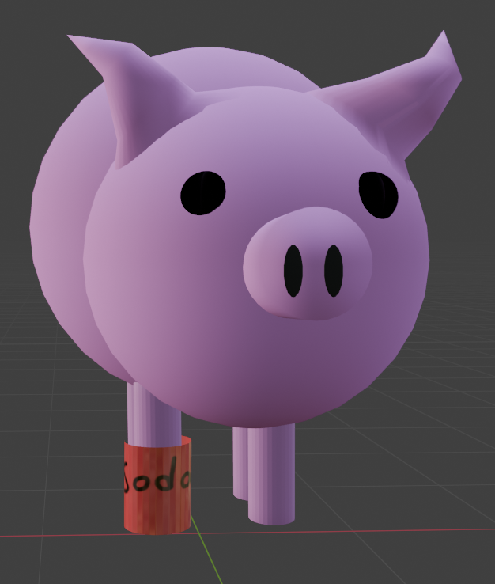
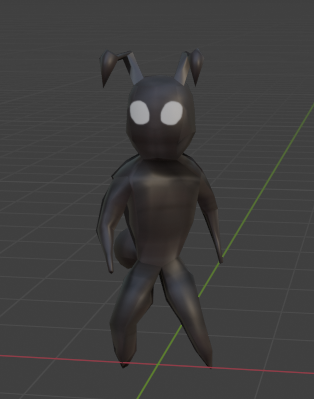
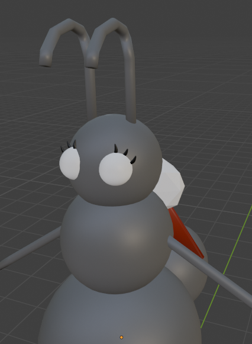
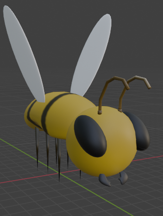
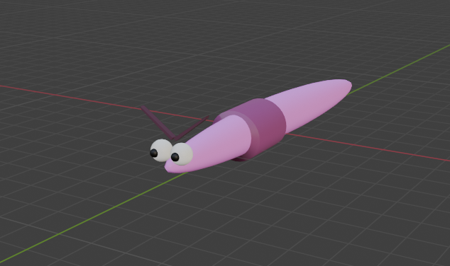
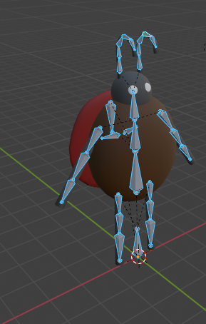
This a character that I created during one of my assignments. I decided to draw a cat knight because one of the instructors was drawing knights, and then I was thinking of cats at the time of him drawing knights. This came out really great to me because I'm not so good with 2d art, but after drawing this it changed my mind.
This is the game screen mockup I made. My original idea was to make the protagonsits facing foward towards a castle. I didn't even know what I wanted the background to be or how the castle should look. That is until I started putting random colors and shapes on to the mockup sheet until I came up with an idea for the the background. Then for the castle I waasn't quite ood at drawing, I seen the shape that I had made and decided to turn that into a monster instead. In the end it all came around to looking like this. Another piece of artwork that I'm proud of.
This is one of the levels I made for Invasion B-lob. Took me a week to make but it was worth it. The problem I came across was finding out what level design I should do because im not that creative. So I listened to some music to help me think. There was this image that I seen in the video. The image that was used in the video was a beautiful sunset image that I liked alot. So I made this chill vibe like level which was inspired from a sunset image.
This image is from a slide show story board that I created for an assignment. This picture specifically is one of my favorites. Some of this was from imagination, but most of it like the shop and the mountains was from references that I seen while scrolling on google and pinterest.
This was my first attempt at making a horror game. I struggled with getting the enemy to spawn at different angles and proceed to get closer to the player. Took me days to try and figure it out myself until I gave up. That's when I needed helped from my teacher. This level was the only level that I struggled with, besides that everything else was easy.
This was the tutorial for construct 3. All I did was put in my own custome characters. This was day one of me starting questar and my first time using construct 3 so I was still getting adjusted to things. The blue zombie'ish character was inspired by the volitiles from the game "Dying Light" mixed with some zombies from old arcade games.
This is a plate of donuts I made from blender. I watched 14 episodes of a blender tutorial to make these which took about two weeks to fully finish. This was also my first real introduction to blender. Modeling the donut was lsow but painting and desighing the donut was insane. Not only did I learn to just create donutes, but I also learn about great lighting positiong, spawing pre-existing models from other websites and creating backgrounds with details.
A 3D living room from tinkercade that I made. A simple room with a TV, lamp and other furniture. I enjoyed making this a lot. instead of there being a already pre made lamp, I had to make my own custome lamp. Same goes for the T.V. There wasn't a pre made T.V model so I had to make one on my own. I liked that because I got to be creative about how I was going to make it look like a T.V. I had to make little squares and circles and shrinking them down to look like buttons. I also Used rectangles to make the T.V look like it's being stabled. Liked how it came out.
These are the characters I would've used if I didn't make the pig so cool. The light green model was gonna be animated with the pig model together but I decided to scrap that and only use the pig model. I thought it would be unfair to the light green model because I made it first before I made the pig and the other 3 models. So I decided to add a group photo of them into my portfolio for recognition. I also used them for test animations
This bird was inspired from a rubber duck I had at home and decided to create it in blender. This was the very first character model that I created so I struggled a lot throught the whole process. But the main things I struggled with was the modeling becuase I wasn't so good with modeling characters yet, the UV unwrapping and the texture paint. then after I made the blender model look similar the the rubber duck I had beside me, I decided to give it some extra features like arms and legs.
This is a pig model named Cornball I created in blender and animated with a celebration animation. Hardest thing about this whole modeling process was the weight painting. After a few trials and errors I was able to get it where I wanted it so that when I go to animate cornball, he wont look like a skinwalker after bending a limb.
This is the main protagonist of "Natures' playground" that I animated. I did the run cycle, all directional dodges and idle animation for him. It was hard animating because I was still trying to get the hang of animation but I like how they turned out.
This is the queen ant model that never made it to natures' playground. The original concept was to have the main protagonist have to defend the queen ant from the other enemy insects but me and the group didn't have enough time. Stil decided to add her into my portfolio.
This is the enemy model for "Natures' playground" that I created by myself. This is when I was given the task to make an enemy bee. I like how it turned out.
This is an enemy model that I made that was suppose to be in natures' playground but never made it in the game. Didn't take long to Model and animate it. Even though it couldn't make it into the game, it still has room in my portfolio.
This was another character model of "Natures' playground" that was suppose to be in the game but didn't make it in. The role of the lady bug was to drop down useful items that the main protagonsist could use to fight off other enemies. Thought it would be pretty cool to also show the rigging.
main page games I worked on Resume music/audio